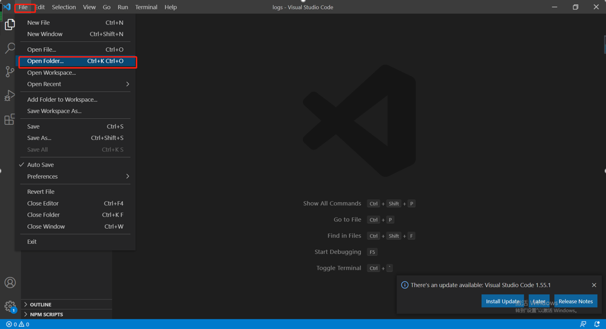

安装Node.js
从Node.js官网下载对应平台安装程序，一般版本选用最新的稳定版本，本次搭建选用的是nodejs 14.x的版本
验证nodejs安装成功，win + R 打开cmd命令行窗口，输入命令如下：
1
2node -v //执行回车后
v14.16.0 //显示版本号
认识npm
由于是学java出身，学习node时总会用java中的一些相似概念与nodejs作比较，npm其实就是类似java中的包管理工具，譬如maven等，从这个角度对我而言就很好理解了
npm官网上有很多开源的模块可供下载安装，通过npm install “模块名称” 即可下载安装，譬如要使用模块A，而模块A又依赖于模块B，模块B又依赖于模块C和模块D，下载模块A的同时会根据依赖关系把相关依赖的其他模块一起下载下来，既提升开发效率，又不会出错；如果体验过以前java自己搭建框架手动导入依赖包同学，肯定能体会手动管理依赖包的痛苦，既麻烦又容易出错。
npm在nodejs安装时绑定安装好了，win + R 打开cmd命令行窗口，输入命令如下：
1
2npm -v //执行回车后
7.7.5 //显示版本号
安装vscode
- Java的IDE一般用eclipse或者idea，目的是为了在一个环境里编码、运行、调试，提升开发效率。nodejs开发选用Visual Studio Code，优势是启动速度快，执行简单，调试方便，并且免费使用。
- vscode官网下载对应平台安装程序，具体安装方法就不用教了吧，会用电脑就会装了
第一个nodejs程序
- 又要提到java，谁叫咱是java出身呢，只能请大家海涵，原谅则个了，第一个程序当然就是著名的hello world啦！
注意点
- 请不要使用Word和写字板，进行手写代码，写字板会自作聪明地在文件开始的地方加上几个特殊字符（UTF-8 BOM），结果经常会导致程序运行出现莫名其妙的错误。
- 使用其他文本编辑器编写JavaScript代码，注意用UTF-8格式保存。
- 既然已经安装好vscode，接下来所有的程序都在vscode里进行编码编码、运行、调试，避免不必要的错误
创建helloworld.js
- 在D盘根目录下新建一个仓库目录nodejs_workspace（此处以D盘为例，具体可自行选择安排）
- 打开vscode，左上菜单栏File栏下拉选择open folder选择打开D:/nodejs_workspace

- 打开vscode，左上菜单栏File栏下拉选择open folder选择打开D:/nodejs_workspace
- 鼠标移动至左侧EXPLORER栏，点击右键，再选择NEW FILE
- 鼠标移动至左侧EXPLORER栏，点击右键，再选择NEW FILE
- 填写代码，第一行总是写上’use strict’;是因为我们总是以严格模式运行JavaScript代码，避免各种潜在陷阱。
1
2
3'use strict';
console.log('Hello, world.');
- 填写代码，第一行总是写上’use strict’;是因为我们总是以严格模式运行JavaScript代码，避免各种潜在陷阱。
- 左上菜单栏Terminal选择 New Terminal
- 左上菜单栏Terminal选择 New Terminal
- 在终端执行命令，执行第一个nodejs程序
1
node helloworld.js
- 在终端执行命令，执行第一个nodejs程序